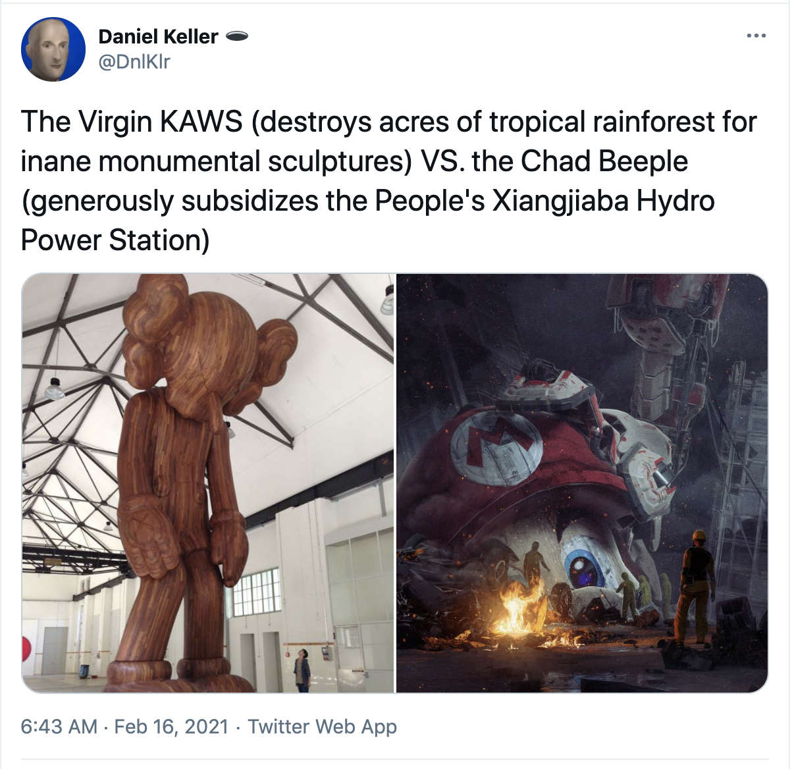
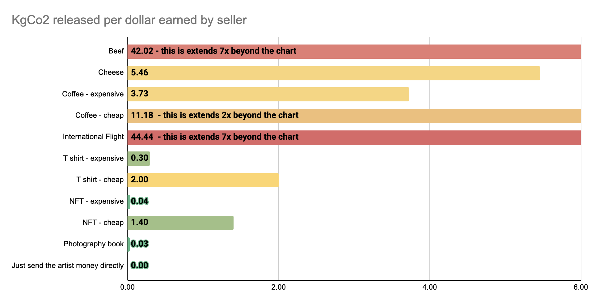

The views expressed here do not represent those of my employer, they may not even represent my own views. I am thinking out loud in public here and putting my head on the chopping block by communicating something against the popular opinion. So please email and correct me if I’ve made a mistake somewhere.
Having said that, yes climate change is real, and it’s being caused by humans. My aim here is not to discredit climate change, or downplay it. But some conversations happening in the crypto art space are disingenuous and misinforming people based on headlines alone, and I want to share what I’ve found. I was also outraged and fascinated at crypto’s energy use, but I’ve found the truth seems less hyperbolic than the headlines.
I assume you already know what Bitcoin (1) is. Ethereum is a block chain like Bitcoin that can be used for more than currency, you can use it to run software. Bitcoin and Ethereum both use Proof of Work (2) algorithms right now where many computers compete to solve cryptographic problems, which uses electricity and produces heat waste. Eventually the plan is that Ethereum will instead use Proof of Stake (3), which is orders of magnitude more efficient. People put a monetary deposit at stake to participate in verifying transactions, and if they misbehave they lose their deposit. I’m simplifying but you can read more yourself if you care about the details.
NFT’s are Non Fungible Tokens, basically a token on a blockchain that isn’t currency but is instead something else. Like a URL to an artwork for example. People have been making art with blockchain technology for a long time, and covering that history is out of scope of this article.
There have been a few viral discussions in the media arts community regarding the CO2 footprint of NFTs. If you haven’t seen them, the two I will refer to most are cryptoart.wtf (4) and The Problem of CryptoArt (5). If you haven’t read them you might want to, and then return here when the fear, uncertainty, and doubt have built up enough that you want to give up participating in society altogether. These kinds of Doomer articles fuel Inactivism, they play into the hands of big oil companies. If you feel like there’s no avoiding the climate apocalypse it can be just as bad as thinking it’s not happening.
To summarize the two above mentioned sources:
By now you have probably heard that Bitcoin, crypto currencies, crypto art, and NFT’s are bad for the environment.
Before reading any further, try to guess what percentage of our total CO2 output crypto currencies like Bitcoin and Ethereum are responsible for.
Really, take a second, stop reading and guess. What’s your guess? 50%? 30%? 15%? 10%? Based on how people write and talk about it, and the number of headlines comparing it to the footprint of a small country, what percentage would you guess?
You may be surprised to hear that Bitcoin accounts for 0.07% and Ethereum is roughly 0.02% of our total CO2 footprint based on estimates, depending on the year, crypto mining rates, and how much coal vs renewables you think they use. I’ll return to that last point later. Also keep in mind that NFT’s and crypto art are an even smaller fraction of that 0.02%, I haven’t been able to estimate NFT’s portion of all Ethereum use, but if someone has it send it over. My guess is that NFT’s are less than 10% of that 0.02% but I’d love to know. Update: SuperRare has clarified that minting NFTs doesn't even add to the energy usage of Ethereum (25). Even if you don't believe SuperRare, you can use services like etherscan.io/gastracker to see that NFT's use about 3% of the Ethereum network's energy. For context, YouTube and the entire Ethereum network have a similar carbon footprint (26). Either way, here’s a graph that might help put all this into perspective, although the amount Bitcoin and Ethereum are responsible for is so small it can’t be plotted accurately here.

The total CO2 and distribution by sector are from 2017 (totaling 49GtCO2) (6), and the mining rates are the current all time high rates (7). Because of covid CO2 is down something like 6% worldwide (8) but I think it’s a fair estimate to compare the peak of crypto activity to ‘nominal’ human behavior before half the world went into lockdown. If you want a detailed breakdown see here (6).
You might be thinking: “Well it’s a small part of the problem but it’s still a problem, we should do everything we can to reduce emissions!”
It’s worth understanding that one unit of energy consumed is not necessarily one unit of energy produced. Turning off all crypto tomorrow wouldn’t necessarily reduce our emissions by 0.08% which these estimates may lead you to believe. About 5% of the electricity generated is lost during transmission from where it’s produced to where it’s used (9). Many mining operations are physically located near power plants for cheap energy, using some of what would be otherwise lost in transmission. And although Lemercier points out that 64% of the world’s electricity runs on fossil fuels, some estimates for Bitcoin mining show it uses 74% renewable energy (10). This is in part due to the fact that there are many renewable power generators which are located in remote areas and are underutilized, making bitcoin the only viable use for that electricity (10). Although, the 74% figure may only be true during the wet season of the year in China when hydroelectric power is at its peak (11). Either way, saying “Crypto infrastructure relies mostly on fossil fuels”(5) is failing to see past one's own feet. This is a power grid problem at its root that is not unique to crypto.
You might still be thinking: “Well it’s a small part of the problem but it’s still a problem, we should do everything we can to reduce emissions!”
Although I agree, it’s worth knowing that the oil giant BP were the ones who introduced a personal CO2 footprint calculator shifting the blame onto consumers (12). Additionally, the recycling symbol itself was a ploy by plastics manufacturers to shift the blame onto consumers so they could keep producing more plastics. I’m not saying we shouldn’t recycle, but we should be addressing problems at the source rather than policing each other's behavior. This notion that if we all behaved better the problem would be solved is a manufactured lie. We should all do our best to behave responsibly, but we need to understand the scale of the world we live in and who is actually responsible.
Attention is a finite resource, and outrage is a type of attention. We should focus our efforts where it actually matters. With the amount of headlines and outrage generated at crypto currencies you would think it was a major issue, when it’s more like complaining about an ant walking across your toe while the whole house is on fire. The real problem is the giant 72% orange wedge in the graph above, it’s fossil fuel subsidies, its coal power plants, its fracking. If your number one motivation is the environment, and you’re behaving rationally, it makes sense to focus on the big things most and the little things least.
Also, now that we know the scope of the problem it’s worth revisiting Lemercier’s and Akten’s principal arguments that Proof of Work is very bad. However, this is a known problem and the Ethereum Foundation is working to implement Proof of Stake, a version of which is already live. The transition to Eth2 has already started. Pointing out that Proof of Work is bad at this point is only going to shock people not working on the technology. Everyone working on this stuff knows it. The largest NFT platform NBA Top Shot already runs on a Proof of Stake system (13). And as a personal anecdote, the NFT marketplaces I’ve spoken to are all either scoping out what it would take to change their system to POS, or they have plans in place, and are waiting until they can do it gracefully and with the most impact. One could argue they should just change now. But from what I understand, it’s already in progress..
If you compare NFT’s on a per dollar basis to other things artists might sell the picture changes a lot. Assuming your NFT is priced at 300$ they are linked to less CO2 per dollar than a cheap 15$ t-shirt, and if you price them in the thousands they are more efficient per dollar than a book of printed photographs (14). Any price over $10k USD and they become orders of magnitude more efficient per dollar. I think this is a fair comparison because it’s extremely hard to financially survive as an artist, and many artists online rely on printing t-shirts, enamel pins, prints on paper, and whatever they can sell to pay the bills. There are many art markets, but often it’s a balance between selling a few expensive things or many cheap things, and managing how to successfully market to both audiences.
Beeple has 1.8M followers on Instagram, if he got 1% of those people to buy a 90$ t-shirt he would have made 1.6M$ and a 270 tCo2 footprint (15). Compare that to his December NFT drop which made him $3.5m which Akten estimated at 190 tCo2 (17).
As an artist you might ask yourself, “I need to make $100K a year to survive, what can I do that will have the least harm?” And I’m telling you right now, if you can sell 20 NFT’s for $5k that’s a better alternative for the environment than having a merch store selling print on demand clothes and objects.
You might be thinking: “So you’re saying NFT’s are as bad as X that means we should ignore it?”
What I’m saying is that if these digital artists were selling enough shirts, photo books, and other physical merch to make the same amount of money there wouldn’t be a single article or headline written about the negative impact. People are negatively biased to associate crypto with bad things based on the number of negative information they’ve seen about it. We live in times of great inequality both financially and sociopolitically. Bitcoin makes for a good story, and people are optimizing their content based on what drives clicks.
On the other hand, the consumption of animals produces something like 200x the carbon footprint of crypto but it’s inconvenient and uncomfortable to tell people to eat less meat. You don’t have to go full vegan to make a difference. But it feels better to be angry at an immaterial currency that seems irrational, than to deprive yourself of something pleasurable you're used to doing. Or to fight against a somewhat nebulous enemy like “big oil” who is actually responsible for our situation.
As an artist working with digital media trying to survive in the world I’ve had to sell t-shirts, websites, paintings, drawings, sculptures, photographs, software, VR apps, music videos, animated gifs, and been commissioned to make things ranging from sports safety posters to homoerotic valentines day cards. I’ve worked in and out of tech companies, dug holes, made driveways, washed dishes, lived off of unemployment and anything I could think of to make money. When I was still considered a net artist in the early 2010’s and exhibiting every other week I would have killed for the opportunity to sell NFT’s.
That’s part of my bias and perspective in writing about this topic. Instead of selling NFT’s I was printing net art on limited edition shirts (18). And in grad school I started another shirt company that I scaled up to producing and selling thousands of shirts a month with no outside investor money. I stopped making shirts because it was just an arbitrary economic activity to make money, and I didn’t enjoy doing it. But it’s a viable way to make a living. It’s callous and disingenuous to pick on other artists for selling things, even if they are virtual things that, for now, involve using electricity to produce.
Verifying an NFT transaction uses about 30% more CO2 than the footprint of a pair of blue jeans and about three times as much as a single t-shirt (19). Lemercier’s comparison was that he exceeded his normal CO2 output for his studio practice, which he describes as, “'focused on projections of light in space” rather than producing many physical works. If he had suddenly sold hundreds of shirts he would have released more than two years worth of his regular CO2 as well. Akten was comparing the electricity usage of NFT’s to an average European resident. But I think that’s a disingenuous comparison, because he’s comparing artists, who are both entrepreneurs and small businesses, with an average consumer's electrical usage at home. As I’ve argued above, when priced correctly they can actually be more efficient per dollar than other alternatives.
Lemercier demonizes carbon offsets and calls them “a dangerous misconception”(5). His arguments are accompanied by images of coal mines and full of dire warnings which leave me feeling defeated and depressed, rather than empowered to make change in my life. Although carbon offsets are not a magical solution, they should be part of our solution. Planting trees is a net benefit to everyone, regardless of the reason someone decided to plant the tree. Money makes the world go round, if the NFT platforms all donated 1% of their profits to carbon offsets it would have a positive difference in the world and they would be carbon negative.
Discouraging this is sad and counterproductive. In my estimation, the total cost of making Super Rare carbon neutral for its entire history is about $12-36k USD depending on the source of the offset (20). It would be a minor cost for them to be 100% carbon neutral, or even 100% carbon negative, and offset as much as they are being blamed on producing. Calling for an all out boycott to NFT’s is hyperbolic, and feels like guilt mongering. Both Akten and Lemercier’s articles have been widely shared on social media replying to artists releasing their work, guilting and shaming them into feeling responsible for open pit coal mines that have already been dug. I think this is unfair to the artists. I strongly feel like both Akten and Lemercier should have focused on solutions and been more careful in their approach. They may not have intended to demonize all of the artists tokenizing their work, but that was the net outcome.
Lemercier makes the point that, “It will take a tree 12 years to offset the minting of a single NFT” (5) leaving me feeling hopeless. However, an alternative hopeful perspective is that a determined person can plant one tree a minute, averaging to 2,500 trees a day (21). Mechanical solutions can plant 5,000 trees an hour (22). It’s admirable to engage in climate activism and center your whole career around it. But we all have to be careful not to fall into Doomerism and discourage people from carbon offsets. We must not discourage people from taking action because it’s not the most-correct action. Just like having two vegetarian days a week is better than none.
Some artists have a perverse incentive to produce Fear, Uncertainty, and Doubt. I once almost fell victim to this when my masters thesis on reverse engineering facial recognition went viral (23) . The work was exhibited worldwide, picked up by many major news outlets, and is in the permanent collection of notable museums. This experience quickly made me realize I could center the rest of my career around playing into the fears of society while producing shocking work meant to be shared and written about. If you’re not careful, you can allow the clickbait nature of our information age to guide how you create and market your projects. But I have made the conscious decision not to play on people’s fears.
To be clear I’m not accusing everything that Akten and Lemercier do as being simply performative, or fear mongering. But it’s a very delicate balance to strike between communicating a problem and scaring people, while promoting yourself and personally benefiting. It reminds me of spiritual leaders who are amazing at marketing, at some point you can let the marketing take over and lose track of the whole point.
Lemercier reduced his annual flights from over 40 to under 5. I think he’s genuinely trying to do good. His suggestions about NFT scaling make sense, and as I’ve said everyone working on the technology wants this stuff to happen. But the article he wrote has the net effect of throwing everyone making crypto art under the bus. It’s full of phrases like ‘climate apocalypse’, images of open coal mines, messages that make me feel like planting trees is a waste of time, while simultaneously full of images of his own work, photos of him from behind looking contemplative at his own sculptures. It’s unkind to say but it feels like perverse marketing in this instance. It feels to me like a successful artist punching down at artists who have never been able to sell their work, while in the same breath promoting their own work. Equally so with Akten’s focus on individual artists and sneaking his own face into the website. He’s since removed the names of individual artists but I think the harm was already done. I think they both owe the whole digital art community an apology. I think they should have led with solutions, actions we can take besides inaction, and avoided making a guilt list of individual artists or artworks. I’m mixing the issues I have with the two of them together a bit, but I think they were both wrong in their approach.
If you want to turn this critical lens at me, you could argue I’ve minted NFT’s and stand to gain from drawing attention to myself. And I’m not an expert in crypto currencies, cryptography, power plants, energy transmission or production. I welcome any corrections or additions you might have. Especially if you are an expert in a topic I’ve discussed and may have misunderstood.
The problem of crypto currencies is an unsolved one, but it’s a known problem that experts are working on solving. NFT’s need to move from Proof of Work to Proof of Stake and Ethereum itself is also in that transition. However, if every article written about Bitcoin’s 0.07% negative effects instead was about how meat is 15% of our annual CO2 output (24), and convinced someone to go vegetarian 3-4 times a week, or was instead about ending fossil fuel subsidies, it would have a thousand times more positive impact. Again, attention is a finite resource, and outrage is a type of attention. We should focus our efforts where it actually matters and at an appropriate scale.
For artists and collectors: I’d encourage everyone selling NFT’s to dedicate 5-10% of their income to charities you think matter. Give back to the environment. Give back to communities struggling. This is a new system for buying and selling art and there’s an opportunity to be more equitable and charitable than the old system.
Thanks for taking the time to read this, again I welcome any feedback especially if I've gotten something wrong. Feel free to email me at sterlingcrispin@gmail.com or DM me here:
https://twitter.com/sterlingcrispin https://www.instagram.com/sterlingcrispin/
And occasionally I'm on Clubhouse, although please don't schedule me to speak without chatting with me first.
Thanks
Sterling